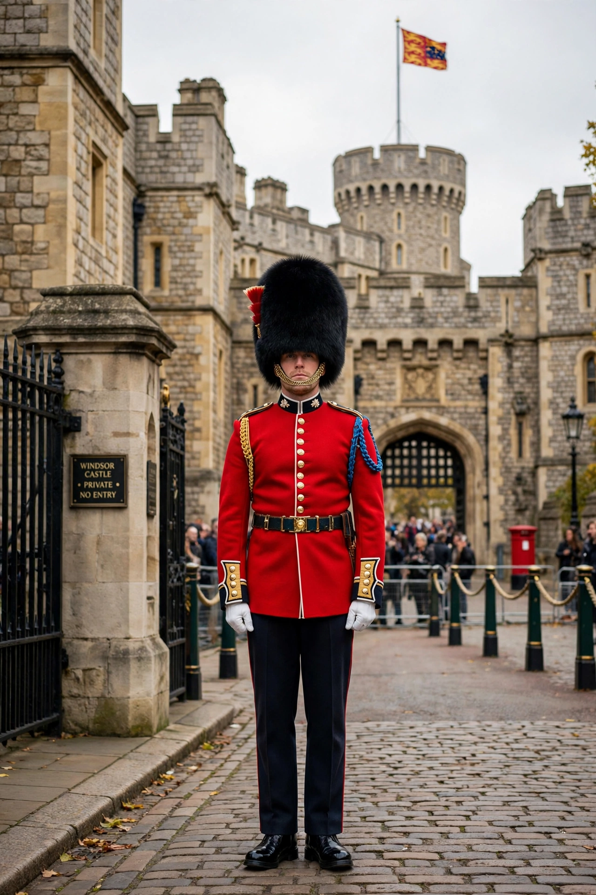

| Prince Harry, Duke of Sussex | |
|---|---|
| Born | Prince Henry of Wales, 15 September 1984, St Mary's Hospital, London |
| Spouse | Meghan Markle (m. 2018) |
| Issue | Prince Archie; Princess Lilibet |
| House | Windsor |
| Father | Charles III |
| Mother | Diana, Princess of Wales |
Prince Harry, Duke of Sussex (born Prince Henry Charles Albert David; 15 September 1984) is a member of the British royal family. He is the younger son of King Charles III and Diana, Princess of Wales, and is fifth in the line of succession to the British throne.

Harry was born at St Mary's Hospital, London, and was educated at Wetherby School, Ludgrove School, and Eton College. His mother died in a car crash in Paris in 1997, when he was twelve; he and his brother William walked behind her coffin at her funeral. After Eton he spent a gap year in Australia and Lesotho, then entered the Royal Military Academy Sandhurst.
Commissioned into the Blues and Royals, Harry served two tours in Afghanistan — in 2007–08 as a forward air controller (a deployment cut short when his presence was leaked to the press) and in 2012–13 as an Apache helicopter co-pilot/gunner with the Army Air Corps. He left the Army in 2015 with the rank of captain. In 2014 he founded the Invictus Games, an international sporting event for wounded, injured and sick servicemen and women.
Harry married American actress Meghan Markle at St George's Chapel, Windsor Castle, on 19 May 2018, receiving the dukedom of Sussex on his wedding day. In January 2020 the couple announced their intention to step back as senior members of the royal family; they moved to California and founded the production and charitable organisations Archewell. His memoir, Spare, was published in January 2023 and became one of the fastest-selling non-fiction books of all time.